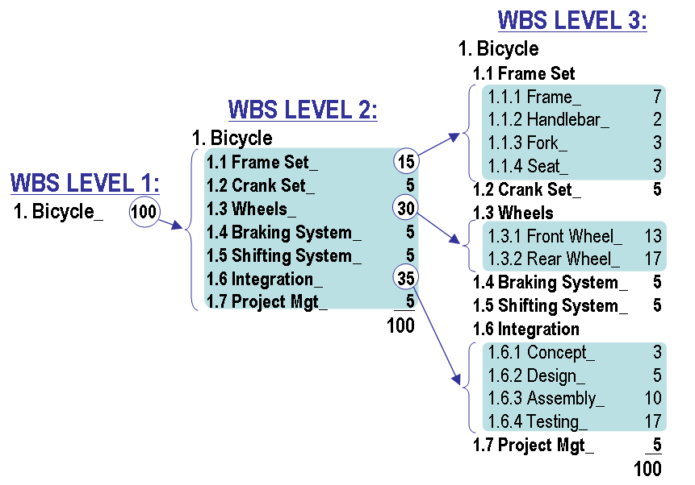

class: center, middle, main-title # Software Engineering Estimation | Risks | Control --- ## Goals for today - Can explain a few different approaches for estimating work - Are able to identify risks and prioritize them - Understand the fundamental tradeoffs between scope, duration, cost and quality --- class: middle, center ## Management ??? With today's topic we are venturing into management territory. When you hear someone with a title of "manager" - what do you think she does? Management is fundamentally the same - in all types of organizations - in all departments - at all organizational levels --- ## Manager's responsibilities ??? **Manager** - a person who is primarily responsible for the five management functions. But non-managers also benefit from improving their management skills! -- 1. Planning - Defining goals, objectives, and how they will be acomplished (and documenting that!) ??? Planning: - Example: What needs to be done, who will do it and in what order? -- 1. Organizing - Defining organizational structure, assigning roles and responsibilities ??? Organizing: - Example: Introducing order: organizing how things will be documented. What tools will be used, etc. - Required when two or more people are involved (i.e. always) - Example: Each thought the other one was responsible for specific task -- 1. Staffing - Putting the right people in the right seats, building teams ??? Staffing (LT: Komandos formavimas): - People are the main asset (take people away and code is useless) - A manager primarily works with people - Optimizing return from all employees to benefit the entire enterprise - Example: HR managers vs project managers. Promoting, knowledge sharing, team chemistry, etc. - Trivia: "People are promoted to their level of incompetence" -- 1. Leading - Motivating and aligning people. Helping solve problems. Creating an environment that facilitates both. ??? Leading: - Main challenge - achieving effectiveness and unity of action (Demo: vectors that add up) -- 1. Controlling - Are we on track? Are we [effective](https://cromhallchapel.files.wordpress.com/2015/07/dontreinventthemap-6ba62b8ba05d4957d2ed772584d7e4cd.png)? ??? Controlling: - Accountability (LT: atskaitomybė) requires monitoring. - Example: a company shows unexpectedly bad financial results. Who is accountable? --- ## Do we need a "manager" position? - What do you think? ??? - I've heard of a large company retraining/letting go almost all managers - Mixed opinions from employees - Hierarchical vs democratic (e.g. holocracy) - Management responsibilities distributed across the team - everyone needs management skills --- ## Overall need > Software engineering management can be defined as the **application of > management activities**—planning, coordinating, measuring, monitoring, > controlling, and reporting—**to ensure** that software products and > software engineering services **are delivered** efficiently, effectively, > and to the benefit of stakeholders. > <br><br>— <cite>SWEBOK 3.0</cite> ??? - Notice: more than you alone can do + more than others alone can do. --- class: middle, center ## Planning ??? - An infinite number of combinations how to run a project - We want to select that which maximizes our chances of success - Always about the future, which is uncertain (therefore, forecasting (LT: prognozavimas) might be a more appropriate term) - Selecting the best alternative out of many available - Stakeholders may require access to parts of project plan: - Higher management - Customers - Subcontractors - Suppliers - Investors - Banks --- ## Planning a project - Determine and define deliverables ??? What are the main things that need to be done? (Milestones) -- - Identify quality requirements ??? How good do we need to make it? (Requirements work) -- - Select (and tailor) SDLC model ??? What will be the main stages in our project? This will be covered later. - SDLC recommendation: iterative, incremental, or iterative incremental. - Relationship between SDLC and deliverables. - Recommendation: zero feature, 2 intermediate, final. -- - Estimate effort, schedule and cost ??? How much work is it? When can we complete it and for how much? -- - Identify risks ??? Why could we fail? -- - Allocate people and other resources ??? Who will do what and using what resources? -- - Set up monitoring, controlling and reporting ??? How will we measure progress and keep everyone informed? Next: - Estimation - Risks - Control --- class: middle, center ## Estimation --- ## Estimation - How much work is it and when can it be finished? ??? How many hours of work are needed and on which date can you deliver? -- - It's a *really* difficult question ??? - Fixed-price is not a common mode of operation in the industry. Time-and-materials is way more common. - Also, what are we estimating? Cost? Calendar time? Quality? -- - One of the primary reasons why projects fail ??? Let's take a look at some ways to avoid it --- ## WBS  ??? PMBOk definition: "hierarchical decomposition of the total scope of work to be carried out by the project team to accomplish the project objectives and create the required deliverables." The WBS construction technique employing the 100% rule during WBS construction. Progressive elaboration. WBS includes 100% of the work defined by the project scope and captures all deliverables – internal, external, interim – in terms of the work to be completed, including project management. the sum of the work at the "child" level must equal 100% of the work represented by the "parent" Estimating effort or cost (scope), but not duration. --- ## Gannt chart <img src="../../assets/03-gannt.svg" width="70%"/> ??? Tasks on the vertical axis. Activity durations on the horizontal axis. A Gantt chart showing three kinds of schedule dependencies (in red) and percent complete indications. Modern Gantt charts also show the dependency relationships between activities and current schedule status. Estimating schedule. Summary elements would be e.g. deliveries. --- ## Critical path <img src="../../assets/03-critical-path.svg" width="75%"> ??? PERT chart for a project with five milestones (10 through 50) and six activities (A through F). The project has two critical paths: activities B and C, or A, D, and F – giving a minimum project time of 7 months with fast tracking. Activity E is sub-critical, and has a float of 1 month. If something on the critical path is late, all project will be late. Example: car manufacturing plant where engine takes most of the time --- ## Evidence-based scheduling - [Blog post by Joel Spolsky](https://www.joelonsoftware.com/2007/10/26/evidence-based-scheduling/) --- exclude: true ## Estimation - Size - T-Shirt sizes - Man-months - Story points - Function points - Lines of code --- ## Improving accuracy of estimates - Divide and conquer (decomposition) ??? Common theme -- - Delay estimation -- - Use optimistic, most likely and pessimistic estimation - [PERT](https://en.wikipedia.org/wiki/Program_evaluation_and_review_technique#Time): `(O + 4M + P)/6` -- - Base estimates on other similar projects ??? You can get better with experience -- - Compare with empirical models - [COCOMO](https://en.wikipedia.org/wiki/COCOMO): `E = a + b(S)^c` ??? Constructive Cost Model --- ## Demo - Scope broken down into: - Epics - Stories - Subtasks ??? Long list of tasks we can easily move around -- - Time broken down into: - List of milestones (1-2 months) - Iterations (1 week) - Priorities within iteration (days) --- class: middle, center ## Risk --- ## Risk > Risk is characterized by the **probability of an event** that will result in a negative > impact **plus a characterization of the negative impact** on a project. > <br><br>— <cite>SWEBOK 3.0</cite> ??? Risks can also be positive --- ## A few examples - Estimates are inaccurate -- - Scope creep inflates scope -- - Conflicting stakeholder interests -- - Resource turnover -- - Lockdown due to pandemic -- - Legacy components lack docummentation -- - Training isn't available -- - Exchange rate variabilities --- ## Risk Management > Risk management entails **identification** of risk factors and analysis of the **probability** > and potential **impact** of each risk factor, **prioritization** of risk factors, and > development of risk **mitigation strategies** to reduce the probability and minimize the > negative impact if a risk factor becomes a problem. > <br><br>— <cite>SWEBOK 3.0</cite> --- ## Assessing risk Qualitative - e.g. scale of `Negligible / Important / Catastrophic` ??? LT: Kokybinis -- Quantitative - `Risk exposure = Probability * Cost` ??? LT: Kiekybinis --- ## Assessing risk: Example - **Risk:** Following end-user testing, user guide may need to be improved -- - **Probability:** 40% -- - **Loss size:** 5 man-days -- - **Risk exposure:** 2 man-days (= 5 * 0.4) ??? Insurance works on a similar principle, except price would be e.g. 3 man-days I think we intuitively perform such calculations in the back of our minds, but often they are VERY approximate. By now, I guess everyone at some point had to consider whether they want to get a COVID vaccine or not. There you can also compare risk exposures: - if you get vaccinated (potential side effects) - if you don't (potential of getting sick) --- class: middle, center ## Project monitoring and control --- ## Project monitoring - It is *impossible* to measure the rate of progress except with reference to a plan. -- - Data is the foundation of intelligent decision-making -- - Software engineers do not produce anything physical -- - Lack of visibility makes it difficult to monitor and control software projects -- - Software projects must produce *additional* artifacts that are visible, e.g.: -- - Design documents/prototypes -- - Change logs -- - Reports -- - Project/status meetings -- - Client surveys (e.g. satisfaction level) --- ## Project control - Monitoring provides basis for making decisions -- - Adherence to plans should be assessed: - At predetermined intervals - Continuously -- - Goal is to keep plans aligned with reality -- - This can mean: - Taking corrective actions - Modifying plans --- ## Triple constraint  ??? What if we already see that project will be late and we need to take corrective actions? "Fast, cheap, with all features" - choose two. 1. The quality of work is constrained by the project's budget, deadlines and scope (features). 2. The project manager can trade between constraints. 3. Changes in one constraint necessitate changes in others to compensate or quality will suffer. --- ## Corrective actions The smaller the deviation, the easier it is to correct. -- > Adding human resources to a late software project makes it later. > <br><br>— <cite>Brook's law</cite> ??? In practice, however, trading between constraints is not always possible. For example, throwing money (and people) at a fully staffed project can slow it down. Keep this in mind in your projects --- ## Demo - Regular status reports, e.g. - What did I accomplish yesterday? - What is my goal for today? - What hinders/blocks my work? - What retrospective points do I have? -- - Iteration reports -- - Overall project reports --- class: middle, center # Questions?